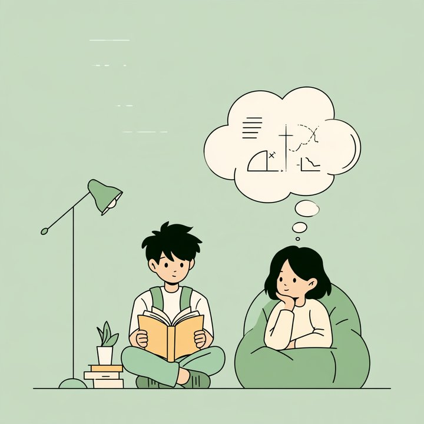

When one variable isn't enough — and when the world won't let you randomize
Welcome back. Practical 4 due this Friday.
Check in
Open the Lecture Lounge
radlab.zone/class/psy309
Practical 4 is due Friday. Who has their effect size? Who needs ten minutes with a TA today?
Before reading week, in your words
What clicked, and what didn’t
Clicked: random sampling vs random assignment. 11 of the 27 of you who wrote at Break 1 named it.
Didn’t, for six of you: Cohen’s d. “Does the M in Cohen’s d represent mean?” “How you got that percentage.”
d = (Mgratitude − Mneutral) ÷ SD. Yes, M is the mean. d = 0.5 puts the two means half a standard deviation apart.
The 69%: stand at the gratitude group’s mean, and 69% of the neutral group scored below you.
One more: “isn’t a manipulation measured too?” You can check that it took, but its level comes from your coin flip, not from the person. Part two sets it beside two kinds of variable whose levels nobody assigned.
Part one
Two variables at once
The interesting questions are a size up
One IV answers "does X matter?" But:
Does X matter for everyone?
Under all conditions?
More than Y?
Cross two IVs and you get a grid. That's a factorial design.
Anatomy
Study technique (retrieval vs re-reading) × testing delay (immediate vs one week) = a 2 × 2: four cells.
Each number in the notation is a factor; its value is the number of levels; the product is the cell count. A 3 × 2 has six cells. A 2 × 2 × 2 has eight.
Read "a 2 × 3 factorial" and you already know the shape before the paragraph ends.
Each factor can independently be within- or between-subjects. One of each is a mixed design — next week.

Re-reading (left) vs retrieval practice (right): close the book and pull it back out. Then test both groups immediately or a week later.
Why cross factors at all?
Efficiency — one study, two questions, same participants.
Testing limits — cross your treatment with a participant variable (age group, experience, your covariate) and you're asking whether the effect holds across kinds of people. External validity, interrogated inside the experiment.
Testing theories — if your theory says the effect works through mechanism M, it predicts the effect appears where M can operate and vanishes where it can't. Only a crossed design can check that.
Careful: in that middle case the treatment factor is manipulated and the participant factor is measured. Causal language applies to the first and not the second.
What a factorial buys that two studies don't
Run "does technique matter?" and "does delay matter?" separately and something is invisible in both:
Whether technique's effect depends on delay.
That dependence — the interaction — is the factorial design's exclusive product. And in psychology it's usually the finding.
Reading the grid
Immediate
One week
row mean
Retrieval practice
80
76
78
Re-reading
78
58
68
column mean
79
67
Main effects: read the margins. Technique 78 vs 68. Delay 79 vs 67.
Interaction: a difference in differences. Technique's effect is +2 immediately, +18 after a week. They differ → interaction.
The frame: "There is a main effect of ___ such that ___ is higher than ___" — and never mention the other factor in a main-effect sentence.
When both appear, the interaction wins
"Retrieval practice is better overall" is true — and misleading. It's barely better immediately and massively better delayed.
An interaction qualifies the main effects. Report it first, and let the simple effects tell the honest story.
This is the trap headline-writers fall into in reverse: reporting the average effect of an intervention that helps one group and does nothing for another.
Parallel lines = no interaction. Non-parallel = interaction. Crossover = the dramatic special case.
Exercise · 30 minutes
Interaction Studio
Six rounds. 90 seconds each. Sketch the graph, then answer on your phone.
A is the rows, B is the columns. One quiz item per round: which effects are present? A main effect of A, a main effect of B, an interaction, or a combination.
Main effect of A?
Main effect of B?
Interaction — and if yes, say it in simple effects?
radlab.zone/class/psy309
Round 1 · warm-up
Immediate
One week
row
Retrieval
70
60
65
Re-reading
50
40
45
column
60
50
Both main effects. Simple effects +10 and +10 — identical, so no interaction. Parallel lines.
Round 2 · one difference grows
Immediate
One week
row
Retrieval
80
72
76
Re-reading
78
58
68
column
79
65
Both main effects (technique 76 vs 68; delay 79 vs 65). Simple effects +2 and +14, so an interaction. Say it: “Immediately, technique barely mattered; after a week, retrieval beat re-reading by 14 points.”
Round 3 · the one that earns the session
On phone
Not on phone
row
Younger drivers
80
40
60
Older drivers
40
80
60
column
60
60
No main effect of either factor — every margin is 60. And a large interaction: +40 and −40.
A researcher reporting only main effects would conclude nothing happens here. The opposite of the truth.
Round 4 · one flat line
Condition 1
Condition 2
row
Group X
75
75
75
Group Y
75
55
65
column
75
65
The margins show two main effects. The honest description is the simple effects: Condition 2 did nothing to Group X (+0) and cost Group Y 20 points. “It depends who you are” is moderation in experimental clothing.
Round 5 · everything at once
Level 1
Level 2
row
Treatment
90
70
80
Control
65
60
62.5
column
77.5
65
Both main effects (80 vs 62.5; 77.5 vs 65) and an interaction: the treatment’s lead is +25 at Level 1 and +10 at Level 2. Three sentences, in the frames. This is Test 2’s exact form.
Round 6 · the trap
Level 1
Level 2
row
Treatment
65
63
64
Control
63
61
62
column
64
62
Tiny, perfectly consistent differences. No interaction.
The right answer isn't "small main effects." It's "I can't tell from cell means alone."
Without SDs, confidence intervals, or n, these numbers are uninterpretable. A table of means is not a result.
Break 1 · ten minutes
Check in
radlab.zone/class/psy309
The material: what's one idea from the first hour that clicked — and one that didn't?
You: how engaged have you felt so far, and what would help?
Part two
Up a level, and out into the world
Three-way designs
A 2 × 2 × 2 has eight cells and seven testable effects: three main effects, three two-way interactions, and one three-way.
The recursive question. A main effect asks: is there an overall difference? A two-way asks: is the effect different across levels of another factor? A three-way asks: is the two-way interaction itself different across levels of the third?
Studied once (left): technique × delay interaction. Studied three times (right): it vanishes. The panels differ → a three-way interaction. That comparison is the entire reading method.
Know when to stop
A four-way design tests fifteen effects. A significant four-way interaction means "the pattern of the pattern of the pattern differs" — a sentence nobody can hold in their head, let alone interpret.
Parsimony: the simplest design that answers the question is the best design.
When you can't randomize
You cannot assign countries to organ-donation policies, teenagers to watching a show, or patients to having had surgery.
A quasi-experiment keeps the comparison structure and gives up random assignment.
So the question, every time: who ended up in which group, and why?
A continuum, not a category
Policy as experimenter. European organ-donor rates track whether the form's default is donor or non-donor. Nobody randomized nations — but the "assignment" is a bureaucratic accident plausibly unrelated to citizens' attitudes. (Johnson & Goldstein, 2003)
History as experimenter. Youth suicide rates before and after a show's release — an interrupted time series. (Bridge et al., 2019)
Self-selection as experimenter. People who chose cosmetic surgery vs people who only considered it. Assignment made by the people being studied.
Placing a study on that continuum is the skill. Not dismissal ("just correlational"), not credulity ("there was a comparison group!") — how close was this to random, and what did the authors do about the gap?
Nobody assigned these
Quasi-independent or participant variable?
Quasi-independent variable
Participant variable
What it is
Something that happened to some people and not others: a policy, an event, a treatment
Something people are: an age, a personality, an identity
Examples
The donor-default form · the show’s release · having cosmetic surgery
Introvert vs extravert · younger vs older drivers · your covariate, split at the median
Could you assign it?
Yes, with the power and the ethics. That’s the quasi: an experiment the world ran for you
No. Nobody can be assigned to be 40, or an introvert
The question it serves
Did the event cause a change? A causal question, with weaker evidence than a coin flip gives
How do kinds of people differ? A descriptive question
So isn’t a quasi-experiment just a correlational study? Neither assigns anything. But a quasi-experiment is built around one specific cause: the researcher picks which groups to compare and when to measure, often before and after the event. A correlational study measures what it finds, as it finds it.
Why respect them
Because the alternative to an imperfect answer is often no answer.
Quasi-experiments trade internal validity for reach: real policies, real disasters, real populations, at scales no lab touches.
Their external validity is often superb precisely because nothing was artificial.
And sometimes they're the ethical design: you cannot assign people to trauma, but you can learn carefully from trauma that occurred.
Small-N: the other bargain
Study a few individuals intensively, treat each as their own experiment, present each person's data in full.
Stable-baseline — measure until it's flat, then intervene. The baseline's stability is the argument.
Multiple-baseline — stagger the intervention across people or settings. A history explanation would need one coincidence per participant.
Reversal (ABAB) — introduce, withdraw, reintroduce. Only suits effects that can reverse; you can't ABAB a skill.
H.M. lost the ability to form new explicit memories — yet improved at motor tasks he never remembered doing. One patient, studied for decades, split memory into systems. N = 1.
Control and measurement density can substitute for headcount when the phenomenon is robust within individuals.
On your own · on your phone
Name the design
Two neighbouring school boards: one moves its start time to 9:30 for budget reasons, the other doesn’t. Researchers compare students’ sleep in both.
Monthly ER visits for alcohol poisoning, tracked for four years before and two years after a city bans late-night liquor sales.
Students who chose to join a mindfulness club are compared at year’s end with students who didn’t, on anxiety.
A reward program starts in one class in week 3, another in week 6, a third in week 9. Each class’s disruptions are counted daily.
A child’s self-injury is recorded daily: two weeks without a weighted vest, two with, two without, two with.
radlab.zone/class/psy309
The key, and the question to ask
Design
Who decided the groups?
1
Natural experiment
A budget. Close to random
2
Interrupted time series
History: what else changed that year?
3
Self-selected groups
The students. Selection at full strength
4
Multiple-baseline
The staggering answers history
5
Reversal (ABAB)
Works because the effect can reverse
1 to 3 is the continuum from near-random to barely better than correlational. Test 2 asks you to place a study on it and name the live threat.
Break 2 · ten minutes
Check in
radlab.zone/class/psy309
The material: what's one question you still have about today, now that you've worked with it?
You: how has your engagement changed since the first break — and what changed it?
Does it work differently for people low vs high on the covariate?
2 × 2 ANOVA + simple effects
3
Does the covariate continuously change the effect?
Moderated regression
Every tier can earn full marks. Pick the one your hypothesis needs.
The worked example, Tier 2
Your Study 2 is a 2 × 2
Lower stress
Higher stress
row
Neutral
52.4
47.0
49.7
Gratitude
55.6
55.2
55.4
column
54.0
51.1
Same reading as the Studio. Gratitude’s effect: +3.2 at lower stress, +8.2 at higher stress. The differences differ, so an interaction.
One factor is manipulated, one is measured. You may say gratitude journaling causes higher optimism, and that it helps the stressed more. You may not say stress causes anything: nobody assigned it.
What the median split costs
The worked example’s hypothesis, simulated 1,000 times. How often is the interaction detected?
Per condition
Stress kept continuous (Tier 3)
Median split (Tier 2)
64 (the Tier 1 n)
29%
21%
256 (× 4)
79%
61%
Interactions need about four times the sample. Splitting the covariate costs power on top: everyone just above the median is treated as different from everyone just below.
What it buys: four means you can see and say in a sentence. That trade is the Tier 2 reflection question.
Lab block · 35 minutes
Your Study 2 as a 2 × 2
Practical 4 not finished? It’s due Friday. Sit with a TA. That’s your lab block.
Six numbers: your n, your covariate’s mean and SD, its slope, the effect, the moderation.
Run the template. Read the four cells.
Post your numbers and your interaction sentence.
The code, and where each number comes from:
radlab.zone/psy309/L8-lab.html
radlab.zone/class/psy309
Last thing
Question box
radlab.zone/class/psy309
Next week: mixed models — and a dataset where studying more makes your grades worse and better at the same time.
Question of the week is in the Lecture Lounge — this week’s participation, in class or online: “Give an interaction from your own life: something that helps in one situation and backfires in another. Phrase it as “the effect of X depends on Y.””
→ next · ← back · f fullscreen · n notes o overview · t timer · ? help